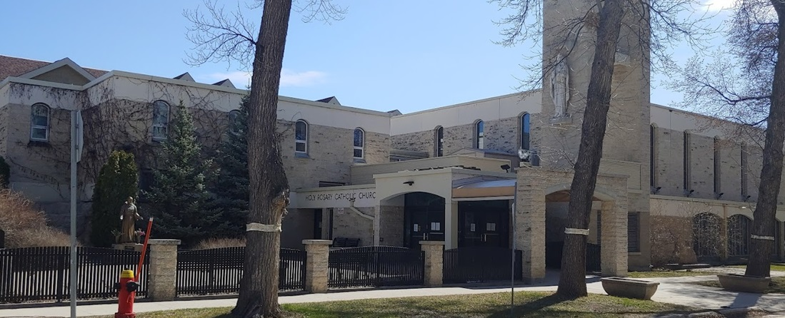

Faq
What should we do between the ceremony and reception?
Take a little break or if you're looking to have some food or drinks immediately after the ceremony, some of your closest and easiest options are:
- Wild Wings - 2589 Pembina Hwy
- Boston Pizza - 2729 Pembina Hwy
- Smitty’s Family Restaurant and Lounge - 2835 Pembina Hwy
Will there be parking available at both the ceremony and reception?
Yes, both the cermemony and reception will have free parking available.
Are our kids invited?
Unless indicated by name on your invitation, we ask that you enjoy a night away from the kids!
Transportation options?
We recommend using Uber or Unicity Taxi Ltd (204) 925-3131 to get home from the reception. Please do not hesitate to ask for help when arranging rides home after the reception.
Can I bring someone with me?
We can only accommodate the names specified on your invitation.
What is the dress code?
Semi Formal. The wedding party will be wearing all black, so if you are up for it, we would love to see our guests be our pop of color for the day!
What are some things to do in the city while visiting?
For our local food and drink favourites, visit our Details page.
For all things to see and do in Winnipeg, visit Tourism Winnipeg.
Location
Mary, Mother of The Church Parish

Breezy Bend Country Club
Nearby Accomodations
- Four Points by Sheraton
- 4 minutes to Ceromony
- 20 minutes to Reception
- Hilton Garden Inn Winnipeg South
- 15 minutes to Ceromony
- 15 minutes to Reception
- Super 8 by Wyndham Winnipeg West
- 22 minutes to Ceromony
- 7 minutes to Reception
Dining Favourites
These are some local favourites. We recommend making prior reservations, calling beforehand to see what the wait is like, or going early to beat the crowd!
-
Brunch
-
Dinner
-
Local Coffee Shops
-
Drinks
Wedding Party
Maid of Honour
Christine LeMaistre - Caitlin’s older sister
Bridesmaids
- Karen Ticzon - Caitlin’s sister-in-law
- Mikayla Gawiak - Caitlin’s childhood best friend
- Amber Klause - Caitlin’s childhood best friend
Best Man
Chadd Ticzon - Tanner's best friend & brother-in-law
Groomsmen
- Tyler Bouteiller - Tanner's older brother
- Rogan Bacon - Tanner's younger brother
- Brennon Madland - Tanner's childhood best friend
Master of Ceremonies
Scott LeMaistre - Brother-in-law
Primary Sponsors
- Tyler Bouteiller
- Christine LeMaistre
Secondary Sponsors
- Jenilyn Monton - Met Caitlin in 15U basketball 2010
- Claire Harvey - Met Caitlin in 15U basketball 2010
- Victoria Hartfiel - Met Caitlin in X-ray School in 2018
- Alaynah Hohne - Met Caitlin in X-ray School in 2018
CEREMONY
There are two sponsors, the Principal Sponsors and the Secondary Sponsors.
Role of Principal Sponsors
Witnesses to the couple's marriage and signs the marriage certificate.
Lighting of the Unity Candle
Symbolises two lives, two spirits, and two families joining together as the couple starts their new life as one.
- Christine LeMaistre
- Tyler Bouteiller
Role of Secondary Sponsors
Manage unity coins, pinning of the veil, and setting the cord.
Coin
Thirteen unity coins symbolize the couple's mutual desire for wealth and prosperity as they begin their new life together.
Veil
The pinning of the veil symbolizes that the bride and groom are clothed and unified as one.
- Jenilyn Monton
- Claire Harvey
Cord
The cord is a symbol of the bride and groom’s bond as a couple.
- Alaynah Hohne
- Victoria Hartfiel
RECEPTION
Money Dance
Shows good fortune for the couple as they begin a new life together. The couple will dance, and the couple's family members, wedding party and friends will start pinning money onto the bride and groom.
RSVP